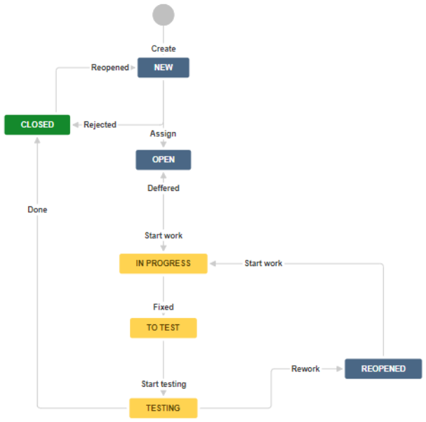

Standards
- Международные стандарты качества — это документы, разработанные международными организациями (например, ISO или стандарт тех.документации IEEE-829), которые устанавливают требования, рекомендации и характеристики для обеспечения высокого качества продукции, услуг, процессов и систем управления.
- Они охватывают различные сферы, включая менеджмент качества, безопасность пищевых продуктов, охрану окружающей среды и информационную безопасность.
- Внедрение этих стандартов помогает организациям улучшать свою работу, повышать доверие клиентов и получать конкурентные преимущества на мировом рынке.
Основные характеристики международных стандартов качества:
- Разработка экспертами: Над созданием стандартов работают международные эксперты, что обеспечивает их актуальность и универсальность.
- Широкий спектр применения: Существуют стандарты для различных отраслей и сфер деятельности, от производства и IT до услуг и экологии.
- Добровольное внедрение: Стандарты сами по себе не обязательны для исполнения, но сертификация на их соответствие (например, ISO 9001) является добровольным решением компании, которое подтверждает ее надежность.
- Повышение эффективности: Внедрение стандартов помогает оптимизировать бизнес-процессы, снижать издержки и повышать вовлеченность сотрудников.
- Международное признание: Сертификат соответствия международным стандартам признается во многих странах мира, облегчая выход на новые рынки и участие в международных тендерах.
GUI
- 10 principle of design
- Digital.gov Guide
- Human Interface Guidelines
- twitterValidator
Инструменты тестирования:
- Цветовой круг он-лайн
- Page Ruler
- PerfectPixel
- Stacksorted - Коллекция бесплатных и платных инструментов для веб-дизайна.
Check-list
GUI
- Соответствие макету.
- Расположение элементов, кнопки, слайдеры работают.
- Кроссбраузерность. Открыть в разных браузерах.
- Валидность. html и css проверить в валидаторах, js - проверить в консоли браузера.
- Адаптивность. Нормально отображаются на смартфоне, планшете и т.д.
- Оптимизация. Сжать картинки, файлы и т.д. для ускорения загрузки.
- Сборка Gulp, Webpack, Vite.
- Минимальная вложенность css.
- Проверить переполняемостью контента текст и картинки (отсутствие, меньше, больше).
- SVG, Webp, Avif, через тег picture, lazy load.
- Объединенные в спрайты иконки.
- Семантика и доступность.
- Методология (БЭМ).
- Теги alt у картинок, фавикон, title.
- Закомментированный код удалить.
- У текстового поля убрать ресайз. Стилизовать ввод текста.
- Отступы между элементами марджином.
- форматы шрифтов — WOFF 2.0 и WOFF.
- link rel='preload' для ускорения загрузки шрифтов браузером.
- Измерение размеров элемента.
- Цвета интерфейса.
- Контент.
- Курсор.
- Масштабируемость.
- Фавикон.
- Заголовки, title.
- Браузерные расширения.
- Back button.
- Scroll.
- Стандарты HTML/CSS.
- Кодировка.
- Правильность перевода.
- Длина переведенных слов.
- Сокращения/аббревиатуры.
- Валюта.
- Шрифты.
- Дата/время, разделители чисел.
- Поиск.
- RTL (right to left languages).
Functional
Проверить работоспособность и взаимодействие элементов
Label (метка):
- Один уровень с полями
- Выровнены по отношению к друг другу
- Длинные строки
Placeholder:
- Цвет шрифта
- Отступ
- Пропадает при вводе значения/фокусе
- Появляется при очистке
- Нельзя скопировать
Text field:
- Цвет шрифта, отступы
- Граничные значения
- Классы эквивалентности
- Длинные строки
- Маска паролей
- Trim
- Работа с текстом
Text area:
- Длина
- Перенос слов
- Масштабирование
- Скролы
- Enter (Ctrl-Enter)
Checkbox:
- Все состояния
- Неактивный
- Неактивный включенный
- Взаимное расположение
Radiobutton:
- Значение по умолчанию
- Неактивный
- Неактивный включенный
- Взаимное расположение
- Отображение группы
Switcher:
- Значение по умолчанию
- Неактивный
- Неактивный включенный
- Стили
Dropdown list:
- Значение по умолчанию
- Длина опций
- Длина списка
- Выпадение вверх
- Подсветка выделенной опции
- Скрол
- Поиск
- Каскадные списки
Combo box:
- Значение по умолчанию/placeholder
- Раскрытие списка
- Длина опций
- Подсветка выделенной опции
- Поиск
- Количество опций
- Выпадение вверх
- Скрол
- Multiselection
- Добавление/удаление вариантов
Button:
- Размер и положение
- Enabled/Disabled
- Enter (Ctrl-Enter)
- Hover/Click эффекты
- Длина текста
- Текст с заглавной
Slider:
- Диапазон
- Шкала
- Метки
- Связанное поле
- Изменение клавиатурой
Date picker:
- Выбор даты
- Ввод даты вручную
- Формат даты
- Граничные значения
- Некорректная дата
- 29 февраля
Time picker:
- Выбор времени
- Ввод времени вручную
- Некорректное время
- Время сервера
- Временные зоны
Tabs:
- С заглавной буквы
- Активная/Не активные
- Hover эффект
Validation message:
- Текст отражает суть
- Нет серверных ошибок
- Красный цвет
- Не должно ломать верстку
- Исчезновение при исправлении
Popup:
- Расположение по центру
- Закрытие по ESC
- Закрытие по клику
- Кнопка закрытия
Дополнительно:
- Разрыв соединения
- Работа в нескольких вкладках
- Проверка консоли и логов
- Отключение Javascript
Usability
от этого зависит, будет ли востребован продукт вообще:
- Соответствует ли приложение ожиданиям конечного пользователя.
- Логичность интерфейса.
- Самое нужное «сверху».
- Продуманная навигация.
- Минимизация действий.
- Локализация.
- Совместимость с другим софтом (соцсети) и железом.
- Скорость работы приложения.
- Информативность (сообщения/обязательные поля).
- Возможность отмены действий пользователя.
- Подсказки и подтверждения.
- Help — должна быть инструкция, как работать с приложением.
Configuration
Кроссбраузерность
Mobile
Check list:
Экран
- Ориентация (landscape, portrait)
- Разрешение экрана
- Адаптация под разные размеры экранов
- Отсутствие пустых экранов в приложениях
- Цветовая гамма
- Монобровь
Ресурсы устройства
- Мало места для установки или работы
- Установка и перенос на SD карту
- Проверять деинсталляцию - удаление всех пользовательских данных
- Отсутствие у приложений поддерживаемых функций (SD – карта, 3G)
- Утечки памяти
- Работа с низким зарядом батареи
- Переключение между wifi и mobile data
- Переход из 4G в 3G
- Отключение интернета
- Работа с датчиками, Bluetooth, GPS, камерой, контактами
- Использовать настройки разработчика: имитирование слабого соединения, не сохранять действие (состояние активити - Android) и т.д.
Usability mobile
- Соответствие рекомендациям: Apple Human Interface Guidline и Google Material Design
- Размер элементов, чтобы пользователь мог попасть по ним
- Количество информации
- Отклик на действие
- Управление одной рукой
- Многократные нажатия на кнопки
- Проверка нативных жестов в приложениях
- Push сообщения
- Сообщения об ошибках и предупреждения
- Прогресс бары
- Использование различных функциональных возможностей девайса (Например, кнопка Back на Android)
OS
- Отдельно Android, отдельно IOS
- Разные версии OS
- Приложение не должно устанавливаться на неподдерживаемые OS
- Требования AppStore и Google Play
Прерывания
- Звонки и SMS
- Вход/выход спящий режим
- Изменение ориентации в спящем режиме
- Включение/выключение GPS, Bluetooth
- Отключение/подключения USB кабеля, SD карты, клавиатуры, гарнитуры
- Запросы должны отменяться, если они не завершены
- Выключение устройства, изъятие аккумулятора, зарядка устройства
Платный контент
- Соответствие цены и содержимого, заявленного в приложении тому, что попадает к пользователю
- Восстановление покупок
- Сохранение покупок при обновлении приложения
Интернационализация
- Корректность перевода
- Все переведенные слова, корректно располагаются в отведенных для них местах
- Форматы дат, разделителей в числах и другие нетривиальные моменты
- Проверка работоспособности в разных часовых регионах
Обновления
- Обратная совместимость
- Поддержка старых версий OS
- Сохранение данных пользователей
- Авторизация
- Проверка обновлений (Сохранение всех данных пользователей, Авторизация)
Советы:
- Если приложение поддерживает Portrait/Landscape – уделите смене ориентации много времени
- Лучше всего переходите между экранами во время взаимодействия с сетью
- Запросы должны отменяться, если они не завершены
- Ответ от сервера на удаленный из памяти (невидимый) экран, не должны крэшить приложение
- Скриншоты, логи, видео
- Использование «Обезьянок», для поиска крэшей и зависаний (Android – UI Monkey Exerciser, iOS - CrashMonkey)
- Использование Бета – версии (Для Android – встроенное в магазин решение, для iOS - TestFlight). Желательно оборачивать приложения в оболочки (Crashlytics, TestFairy, HockeyApp)
- Использовать настройки разработчика
- iOS – позволяет настраивать скорость интернет – соединения и раздавать его используя устройство, как точку доступа, логировать использование трафика и энергии, удобное тестирование iAd – рекламы
- Android – настройки на любой вкус – от отображения загрузки процессора до изменения анимации интерфейса
- Эмуляторы и симуляторы
- Мониторинг
- Убедиться, что поддерживаются все версии из предыдущих релизов (если в приложении добавлена функциональность из новой версии ОС, то необходимо разрабатывать урезанный функционал для старых версий ОС)
Bug
Жизненный цикл дефекта
Люди совершают ошибки (Error):
- Ошибка - человеческое действие, которое приводит к неправильному результату (ISTQD).
- Ошибка в коде или архитектуре программы - это дефект (Defect).
- Дефект - несовершенство или недостаток в рабочем продукте, если он не соответствует его требованиям или спецификациям (ISTQD).
- Дефект может привести к отказу (Failure).
- Отказ - событие, при котором компонент или система не выполняет требуемое действие в заданных рамках (ISTQD).
Пример дефектов:
- Программа не делает чего-то, что она должна делать согласно техническим требованиям.
- Программа делает что-то, чего она не должна делать согласно техническим требованиям.
- Программа не делает чего-то, о чем не говорится в требованиях, однако подразумевается, что она должна делать это.
- Программа трудна для понимания, неудобна в использовании.
Workaround - обходной путь при неработающем основном.
На проекте нужно определять критерии оценки приоритета багов.
- Описать баг.
- Воспроизвести шаги на других устройствах.
- Попробовать обобщить баг с другими случаями.
- Обобщенный вариант (если есть) пробуем воспроизвести на других устройствах.
BTS
Jira с плагинами Xray или Zephyr: коммерческая система отслеживания ошибок, разработана компанией Atlassian.
Quality
9 сентября - день тестировщика: 09.09.1947 - официально зафиксирован первый баг.
- Качество - это степень соответствия системы, компонента или процесса, явным и неявным требованиям, в рамках установленного срока и бюджета.
Quality characteristics (Характеристики качества):
Функциональность
- Функциональность - способность ПО решать явные и неявные задачи пользователя, при заданных условиях.
- Функциональная полнота - способность ПО покрывать все задачи и цели пользователей без сторонней помощи.
- Функциональная правильность - cпособность продукта обеспечивать правильные результаты с необходимой точностью.
- Функциональная целесообразность - насколько это ПО нужно для выполнения задач, можно изменить и соответствует стандартам.
Производительность
Производительность - cпособность ПО выполнять то, что от него требуется с выделенными ресурсами, временем и другими обозначенными условиями.
- Время выполнения - время за которое ПО откликается, пропускная способность и скорость выполнения задачи.
- Использование ресурсов - на сколько ресурсы потребляемые в работе, соответствуют указанным в требованиях.
- Емкость - на сколько количественные показатели (какой объём данных обрабатывает, сколько пользователей) соответствуют лимитам производительности заявленным в требованиях.
Удобство использования
Удобство использования - возможность легкого понимания, изучения, использования и привлекательности ПО для пользователя.
- Удобство и простота использования.
- Определимость пригодности - как быстро пользователи могут определить подходит ли система для выполнения их целей и задач.
- Обучаемость - насколько быстро новый пользователь может разобраться с системой и использовать максимальное количество ее возможностей (подсказки, инструкции).
- Управляемость - насколько интерфейс системы удобен для выполнение задач пользователя.
- Защищенность от ошибок пользователя - насколько сильно система защищает пользователей от ошибок (подсказки и валидация действий пользователя).
- Эстетика пользовательского интерфейса - насколько привлекательный для пользователя дизайн.
Совместимость
Совместимость (compatibility) - способность системы обмениваться информацией с другими системами:
- использовать полученную информацию.
- информация нашего ПО хорошо воспринимается другим ПО.
Сосуществование (coexistence) - способность системы выполнять свои функции используя совместно аппаратную или программную среду без влияния на работу другого ПО и наоборот.
Надежность
Надежность (reliability) - способность ПО выполнять требуемые задачи в обозначенных условиях на протяжении заданного промежутка времени или указанное количество операций.
- Завершенность - отсутствие необходимости его доработать, чтобы оно было понятным и не требовало дополнительных уточнений от пользователя или разработчика.
- Доступность - возможность использовать систему, продукт или компонент когда это необходимо.
- Восстанавливаемость - насколько быстро система может восстановить данные и свою работоспособность при сбоях.
- Отказоустойчивость - способность системы работать, как предполагалось, несмотря на наличие аппаратных или программных сбоев.
Безопасность
Безопасность (safety) - способность системы обеспечивать доступ только к тем данным, которые разрешены для пользователя или других систем в соответствии с их правами.
- Конфиденциальность - способность системы предоставлять доступ к данным только тем, кто имеет на это право.
- Целостность - способность системы предотвращать несанкционированный доступ или модификацию данных.
- Ответственность - способность отслеживать и идентифицировать инициатора любого действия.
- Подлинность - степень, в которой личность субъекта или ресурса может быть доказана как заявленная.
Сопровождаемость
Сопровождаемость (maintainability) - легкость, с которой ПО может анализироваться, тестироваться, изменяться для исправления дефектов, для реализации новых требований, для облегчения дальнейшего обслуживания и адаптироваться к имеющемуся окружению.
- Стабильность - насколько долго во времени система или объект сохраняет неизменность своего состояния.
- Контролепригодность - насколько удобно и надёжно можно контролировать и диагностировать систему на всех этапах жизненного цикла с помощью заданных средств.
- Изменяемость - насколько просто вносить изменения, не затрагивая другие части системы.
- Анализируемость - насколько просто оценить влияние потенциального изменения на другие компоненты системы.
- Модифицируемость - насколько легко добавить или изменить функционал ПО.
- Тестируемость - насколько просто установить критерии тестирования и выполнять тестирование.
- Модульность:
- Степень, в которой система состоит из отдельных компонентов, так что изменение одного компонента оказывает минимальное влияние на другие компоненты.
- Возможность многократного использования.
Переносимость
Переносимость (portability) - характеризует ПО с точки зрения легкости его переноса из одного окружения (software/hardware) в другое.
- Адаптивность - Способность системы адаптироваться к разным окружениям и средам.
- Устанавливаемость - Способность системы разворачиваться и устанавливаться в различных окружениях и средах.
- Заменяемость - Способность системы заменять другие системы со схожей функциональностью.
- QM - Quality management = QA + QC.
- QA - Занимается вся команда, возможно с привлечением консультанта.
- QA занимается Верификацией!
- QC - Занимаются тестировщики.
- QC занимается Валидацией!
- Tester - выполняет тест-кейсы - это часть QC.
Priority
Чем выше приоритет, тем быстрее нужно исправить дефект. Показывает степень важности выполнения задач для БИЗНЕСА.
- P1: Urgent - Срочный.
- P2: High - Высокий.
- P3: Medium - Средний.
- P4: Low - Низкий.
Severity
Показывает технологическое влияние дефекта на работоспособность приложения.
- S1: Blocker - блокирующая ошибка, приводящая приложение в нерабочее состояние, в результате которого дальнейшая работа с тестируемой системой или её ключевыми функциями становится невозможна. Решение проблемы необходимо для дальнейшего функционирования системы.
- S2: Critical - критическая ошибка, неправильно работающая ключевая бизнес логика, дыра в системе безопасности, проблема, приведшая к временному падению сервера или приводящая в нерабочее состояние некоторую часть системы, без возможности решения проблемы, используя другие входные точки. Решение проблемы необходимо для дальнейшей работы с ключевыми функциями тестируемой системы.
- S3: Major - значительная ошибка, часть основной бизнес логики работает некорректно. Ошибка не критична или есть возможность для работы с тестируемой функцией, используя другие входные точки.
- S4: Minor - незначительная ошибка, не нарушающая бизнес логику тестируемой части приложения, очевидная проблема пользовательского интерфейса.
- S5: Trivial - тривиальная ошибка, не касающаяся бизнес логики приложения, плохо воспроизводимая проблема, малозаметная посредствам пользовательского интерфейса, проблема сторонних библиотек или сервисов, проблема, не оказывающая никакого влияния на общее качество продукта.
Verification
QA - Quality Assurance: делаем ли мы продукт ПРАВИЛЬНО?
- это процесс упреждения.
- гарантирует, что мы делаем правильные шаги в правильном направлении.
- фокусируется на создании системы качества и привентирования дефектов.
- имеет дело с процессом создания продукта на весь SDLC.
- настраивает систему тестирования работы команды, пишет общую документацию.
- определяет какую документацию будет делать команда, какие характеристики в приоритете и т.д.
- проверяет выполнение требований к процессу разработки ПО.
- подтверждает на основе представления объективных данных, что установленные требования были выполнены.
Применяется к документации:
- Планы
- Требования
- Дизайн
- Код
- Тест Кейсы
Основные активности:
- Reviews
- Walkthroughs
- Inspections
Validation
QC - Quality Control: делаем ли мы ПРАВИЛЬНЫЙ продукт?
- это процесс исправления.
- гарантирует, что результат нашей работы соответствует ожидаемому.
- фокусируется на тестировании и обнаружении дефектов.
- имеет дело с продуктом на этапе тестирования в SDLC.
- тест-дизайн и тест-аналитика.
- пишет тестовую документацию и анализирует результаты тестирования.
- проверяет выполнения требований к продукту.
- подтверждает на основе представления объективных данных, что требования конкретного использования или применения, выполнены.
Применяется к разрабатываемому продукту. Основная активность - тестирование.
Qualities of a tester
- Саморазвитие
- Внимательность
- Любопытство
- Подозрительность
- Поставить себя на место пользователя (эмпатия)
- Небезразличие
- Исследовательский склад ума
- Логическое мышление
- Умение концентрироваться
- Аналитические способности
- Визуализация
- Креативность
- Изобретательность
- Коммуникабельность
- Ответственность
- Инициативность
- Упорство
- Трудолюбие
- Увлечённость
- Настойчивость
- Цель тестировщика - делать продукт лучше, а людей счастливее.
- Задача тестировщика - находить баги.
- Тестировщик оценивает и измеряет качество.
Testing
Тестирование - процесс исследования, испытания продукта с целью проверки соответствия между реальным поведением и ожидаемым на конечном наборе целенаправленно выбранных тестов.
Позитивность сценария: позитивное тестирование и негативное тестирование.
Последовательность проведения тестирования:
- Всегда перед тестированием спросить какие есть требования.
- Если нет требований, то ищем требования похожего предмета тестирования, основываемся на общую практику и опыт пользователя.
- Пишем свои требования.
- Нефункциональное тестирование без требований не проводят.
- Первым всегда выполняем Smoke Testing - проверяем самый основной функционал.
- Всегда сначала пишем и выполняем позитивные тесты.
- Приоритет составления (выполнения) тест-кейсов определяется вопросом: что мы теряем если оно не работает?
- Чем более вероятен сценарий, тем более он приоритетен.
Проводим тестирования:
- Комплексное.
- Входной тест.
- Основное.
- Повторное.
- Регрессионное.
- Приёмочное.
Test Goals
- Повышение качества ПО.
- Предотвращение появления дефектов.
- Предоставление информации о качестве ПО заказчику.
Testing principles
Тестирование демонстрирует наличие дефектов
- Тестирование может показать, что дефекты присутствуют, но не может доказать, что их нет.
- Тестирование снижает вероятность наличия дефектов, находящихся в программном обеспечении, но, даже если дефекты не были обнаружены, тестирование не доказывает его корректности.
Исчерпывающее тестирование недостижимо
- Полное тестирование с использованием всех комбинаций вводов и предусловий физически невыполнимо, за исключением тривиальных случаев.
- Вместо попытки исчерпывающего тестирования должны использоваться анализ рисков, методы тестирования и расстановка приоритетов.
Раннее тестирование
Для нахождения дефектов на ранних стадиях, как статические, так и динамические активности по тестированию должны быть начаты как можно раньше в жизненном цикле разработки программного обеспечения.
Кластеризация дефектов
- Обычно небольшое количество модулей содержит большинство дефектов или отвечает за большинство эксплуатационных отказов.
- Принцип Парето: Из общего количества возможных тестов всегда необходимо выбирать 20% таких, которые найдут 80% всех багов.
Парадокс пестицида
- Если одни и те же тесты будут выполняться снова и снова, в конечном счете эти тесты больше не будут находить новых дефектов.
- Для обнаружения новых дефектов нужны изменение существующих тестов, тестовых данных и написание новых тестов.
Тестирование зависит от контекста
Тестирование выполняется по-разному в зависимости от контекста: программное обеспечение управления производством, в котором критически важна безопасность, тестируется иначе, чем мобильное приложение.
Заблуждение об отсутствии ошибок
Нахождение и исправление дефектов не поможет, если ПО не удовлетворяет потребности и нужды пользователя.
Test levels
- Уровни тестирования - группы активностей тестирования, которые организуются и управляются как единое целое.
- Уровни тестирования разделяются по времени тестирования и по изолированности компонентов.
- Каждый уровень тестирования — это реализация процесса тестирования, состоящего из мероприятий STLC, и исполняемого в отношении ПО, находящегося на конкретном уровне разработки, начиная с отдельных модулей и компонентов и заканчивая целыми системами.
Unit Testing
Компонентное тестирование - фокусируется на компонентах, которые могут быть проверены отдельно.
Применяются типы тестирования: структурное и функциональное.
Выполняется в основном разработчиками.
Типичными объектами для компонентного тестирования являются:
- Компоненты, модули
- Код и структуры данных
- Классы
- Модули БД
Unit testing выполняется до других видов тестирования, модуль не полагается на внешний код или функции, состоит из 3-х ступеней:
- подготовка и обзор модуля
- сделать test cases и scripts
- провести тест кода
Integration Testing
Интеграционное тестирование - фокусируется на взаимодействии между компонентами или системами.
Применяются типы тестирования: связанное с изменениями.
Типичными объектами тестирования при интеграционном тестировании являются:
- Подсистемы
- Базы данных
- Инфраструктура
- Интерфейсы
- Программные интерфейсы приложения (API)
- Микросервисы
Уровни интеграционного тестирования:
- Component Integration testing: компонентный интеграционный уровень - проверяется взаимодействие между компонентами системы после проведения компонентного тестирования. Выполняется в основном разработчиками.
- System Integration testing: системный интеграционный уровень - проверяется взаимодействие между разными системами перед проведением системного тестирования. Выполняется в основном тестировщиками.
System Testing
Системное тестирование - фокусируется на поведении и возможностях целой системы или продукта, часто учитывая сквозные задачи, которые может выполнять система, и нефункциональное поведение, которое она демонстрирует при выполнении этих задач.
Применяются типы тестирования: функциональное и нефункциональное.
Типичные объекты системного тестирования включают:
- Приложения
- Аппаратные/программные системы
- Тестируемая система
- Операционные системы
- Конфигурация системы и конфигурация данных
- Выполняется тестировщиком, QC
Acceptance Testing
Приемочное тестирование, как и системное тестирование, обычно фокусируется на поведении и возможностях системы или продукта в целом.
Применяется типы тестирования: функциональное и структурное.
Типичными формами приемочного тестирования являются:
- User Acceptance Testing (UAT): пользовательское приемочное тестирование - обычно сосредоточено на проверке пригодности использования системы предполагаемыми пользователями в реальной или моделируемой рабочей среде.
- Эксплуатационное приемочное тестирование.
- Контрактное и нормативное приемочное тестирование.
- Альфа-тестирование и бета-тестирование - обычно используются разработчиками готовых коммерческих решений, которые хотят получить обратную связь от потенциальных или существующих пользователей, клиентов и/или операторов до того, как программный продукт будет выставлен в коммерческую продажу.
- Выполняется в основном клиентами, заказчиками, пользователями.
Системное и приемочное тестирование:
- системное проверяет на соответствие системы требованиям.
- приемочное проверяет систему с точки зрения пользования системой.
- тесты в системном и приёмочном тестировании очень похожи, разница в формулировки теста.
Types of testing
Тип тестирования – это совокупность активностей по тестированию конкретных характеристик системы с заданными целями.
Типы тестирования разделяются в зависимости от цели тестирования.
- Тестирование начинается с изучения требований - что должно быть.
- Далее позитивные тесты - работает ли то, что должно быть.
- Негативные тесты - как отреагирует система на непредусмотренные действия пользователя.
Structure testing
Структурное тестирование (тестирование методом белого ящика – White Box Testing) основывается на внутренней структуре системы или ее реализации.
Под внутренней структурой подразумевается программный код, архитектура, принципы работы и/или потоки данных внутри системы.
Состоит из:
- Statement Coverage - проверяет, что каждый оператор в программе выполняется хотя бы один раз во время тестирования программы.
- Path Coverage - предназначен для удовлетворения критериев охвата каждого логического пути через программу.
- Branch Coverage - проверяет, имеют ли каждое условие ветвления для программы истинные или ложные значения.
- Condition Coverage - похоже на Branch Coverage? но проверяет покрытие для условных и не условных ветвей.
Change related testing
Тестирование связанное с внесением изменений:
- для исправления дефекта
- новая или изменённая функциональность
Проводится чтобы подтвердить, что изменения исправили дефект или что функциональность правильно реализована и изменения не вызвали каких-либо непредвиденных последствий.
Confirmation, Re-test
Тестирование подтверждения - проверить исправленный баг и подтвердить, что он исправлен.
Программное обеспечение может быть протестировано с использованием всех тех же тестовых сценариев, которые завершились с ошибкой из-за найденного дефекта.
Regression
Проверить работает ли то, что было проверено и работало ранее.
Регрессионное тестирование проводится после того, как вся функциональность реализована и все дефекты найденные на предыдущих уровнях либо исправлены, либо принято решение их оставить.
Идеально начинать регрессию ПОСЛЕ заморозки кода (Code Freeze).
В регрессию входит:
- Sanity: Санитарное тестирование - чтобы доказать работоспособность конкретной функции или модуля согласно заявленным техническим требованиям.
- Upgrade: Тестирование обновления - чтобы проверить, что обновление на новую версию не вызвало непредвиденных последствий.
- Smoke: Дымное тестирование – набор тестов, который охватывает основные функции компонента или системы, чтобы определить, работает ли он должным образом до начала запланированного тестирования.
Functional testing
Функциональное тестирование системы включает тесты по оценке функций, которые должна выполнять система - проверить что делает система.
- Тестирование на основе требований выполняется в строгом соответствии с установленными требованиями.
- Тестирование на основе бизнес-процесса выполняется в соответствии с знаниями, основанными на повседневном использовании системы в бизнесе.
Non Functional testing
Нефункциональное тестирование системы выполняется для оценки характеристик программного обеспечения, не относящихся к функциональному тестированию - проверить насколько хорошо работает система. Основные подтипы нефункционального тестирования:
- UI & GUI & UE
- Storage testing
- Operational
- Installation: Инсталляционное тестирование - проверка корректности установки, настройки, обновления и удаления программного обеспечения, чтобы убедиться, что оно работает правильно на разных системах.
Configuration
- Conversion
- Cross-browser
- Binary Portability
Globalization
Globalization (G11N) - проверяет универсальность продукта: его способности корректно работать и отображать данные в зависимости от настроек пользователя.
В мультиязычном ПО при переключении языка все строки меняются на выбранные язык во всех частях ПО, не сломался GUI, верный перевод:
- проверка работы с различными алфавитами, шрифтами и языковыми средами.
- корректное отображение и ввод дат, времени, числовых форматов и валют.
- перенос текста, обрезка строк, корректное отображение графики и иконок в разных языковых версиях.
- все функции приложения работают правильно в различных языковых средах и не возникают проблемы с потерей данных.
- проверка на разных платформах, операционных системах и версиях приложений.
Localization (L10N) - проверяет конкретную локализованную версию приложения для конкретной локали на соответствие культурным, лингвистическим и техническим требованиям конкретного региона или языка (лексический перевод текста, настройка форматов, валюты, единицы измерений, локальное время и т.д.).
Internationalisation (I18N) - убедиться, что приложение готово к локализации (адаптации) и сможет корректно работать в любой среде, обеспечивая поддержку всех функций для разных рынков:
- легко перевести и адаптировать для разных локалей (языков и региональных стандартов), не требуя переписывания кода.
- вынос всех элементов, специфичных для конкретной культуры (текст, изображения, форматы дат и валют), во внешние файлы.
- правильно обрабатывает различные международные форматы данных (валюта, время, даты, числа) и элементы интерфейса корректно отображаются вне зависимости от языка или направления письма вертикально, слева направо и наоборот.
Performance
Производительность - определить, как система работает с точки зрения быстроты реагирования и стабильности при заданной нагрузке.
Характеристики:
- Response time: время отклика
- Throughput: пропускная способность
- Concurrency: способность к параллеливанию
- Availability, uptime: доступность
- Resource utilization: потребление ресурсов
- Capacity: потенциальная мощность
Подтипы производительности:
- Load testing: нагрузочное тестирование – оценка поведения системы при различных нагрузках, обычно между ожидаемыми условиями низкого, типичного и пикового использования.
- Stress testing: стресс-тестирование – оценка поведения системы в пределах или за пределами ожидаемых или заданных рабочих нагрузок или с ограниченной доступностью ресурсов, таких как доступ к памяти или серверам.
- Recoverability testing: тестирование на восстановление работы - способность системы возобновить работу после нештатного завершения или отключения отдельных сервисов и процессов.
- Volume testing: объемное тестирование – позволяет анализировать производительность системы за счет увеличения объема данных в базе данных.
- Stability testing: тестирование стабильности - тестирование в условиях максимально приближенных к длительному реальному использованию: 3 - 5 дней с имитацией автотестами действий пользователей (регистрация, покупка и т.д.).
- Concurrency testing: тестирование параллелизма - проверить как система ведет себя при одновременном доступе к одним и тем же ресурсам со стороны нескольких пользователей или процессов, чтобы выявить проблемы, такие как взаимоблокировки, гонки данных и снижение производительности.
- Endurance testing: тестирование на выносливость - проверяет стабильность и надежность системы при длительной значительной (выше обычной) нагрузке, имитирующей реальные условия эксплуатации, чтобы выявить проблемы, такие как утечки памяти или снижение производительности, которые могут проявиться только со временем.
- Ramp testing: тестирование увеличивающейся нагрузкой - постепенное увеличение пользовательской активности или трафика, чтобы увидеть, как веб-сайт или приложение реагирует на рост нагрузки, чтобы определить точки отказа, максимальная пропускная способность и общая стабильность системы.
- Scalability testing: тестирование на масштабируемость - убедиться, что система может успешно масштабироваться:
- Горизонтально - добавление новых серверов.
- Вертикально - увеличение ресурсов одного сервера, например, памяти или процессора.
- Проверить, как ведет себя система не только при пиковых нагрузках, но и во время процесса масштабирования.
- Выявить максимальное количество пользователей, которое система может одновременно поддерживать без снижения производительности.
JMeter:
- Инструмент нагрузочного тестирования
- Графический интерфейс
- Кроссплатформенность (Написан на Java)
- Бесплатно весь функционал
- Генерация отчетов
- Работа в консоли
- Возможность расширения и тонкой настройки
- Эмуляция одновременной работы пользователей
- Распределенная нагрузка
- Снятие метрик

Быстро или медленно:
- меньше 0.1 секунды - мгновенно
- меньше секунды - быстро
- меньше 2 секунд - достаточно быстро
- 2-4 секунды - приемлемо
- 4-15 секунды - медленно
- больше 15 секунд - очень долго
Классификация проблем:
- медленная подсистема/функция (например медленно загружается страница или выполняется скрипт)
- точка насыщения/'узкое горлышко' (например, пропускная способность сети или очереди для запросов, когда исчерпывается длина этой очереди и начинаются отказы)
- функциональный дефект (когда несколько систем используют один объект и одновременно меняют его состояние)
- дефект интерфейса (восстановление от ошибки - тесно граничит с UX тестированием)
Требования к производительности:
- стала ли новая версия работать быстрее?
- что тормозит - софт или железо?
- почему пользователи не завершают заказы?
- выдержит ли сервер?
- какое состояние приложения?
Цели тестирования производительности:
- сравнить две версии приложения
- найти причину проблемы с производительностью
- оценить потенциальные возможности
- получить подтверждение, что все хорошо
Проектирование тестов производительности:
- Выясняем цели
- Описываем требования и условия
- Формулируем гипотезу для проверки
- Описываем профиль нагрузки
- Делаем сценарии для профиля нагрузки
Как выбрать операцию?
- Критически важные (например, авторизация)
- Связанные с рисками (например, возврат средств)
- Требуемые заказчиком (например, есть просадки по завершению оплаты)
- Часто используемые (например, поиск товаров)
- Ресурсоемкие (например, получение архива)

- Запрос - одна операция
- Транзакция - группа операций/запросов
- Сценарий - группа транзакций (например переходы по нескольким страницам сайта)
Профиль нагрузки - это подбор сценариев (объединение логических действий) для эмулирования нагрузки на ресурс.
- Количество пользователей
- Количество сценариев
- Количество запросов (транзакций)
- Задержки между запросами (помогают регулировать количество операций)
- Задержки между транзакциями (группами запросов, например загрузка страницы так, как пользователь читает инфу, заполняет данные и тд)
- Пользовательского интерфейса (UI)
- Удобства использования (Usability)
- Безопасности (Security)
Recovery
Compatibility
Тестирование совместимости - проверить корректную работу программного обеспечения в различных средах, включая операционные системы, браузеры, устройства и сетевые конфигурации.
Backward Compatibility.
Forward Compatibility.
Usability
Accessibility
Security Testing
Это проверка возможности обхода обычных путей использования и функционала, направленное на обеспечение системы защитой данных и выполнение функциональности по назначению.
- Penetration Testing: тестирование проникновения – это симуляция атаки вредоносного источника, которое позволяет оценить безопасность компьютерной системы или сети.
- XSS (Cross-SiteScripting) — это вид уязвимости программного обеспечения (Web приложений), при которой, на генерированной сервером странице, выполняются вредоносные скрипты.
- XSRF / CSRF (RequestForgery) — это вид уязвимости, позволяющий использовать недостатки HTTP протокола: ссылка на вредоносный сайт устанавливается на странице, пользующейся доверием у пользователя, при переходе по вредоносной ссылке выполняется скрипт, сохраняющий личные данные пользователя (пароли, платежные данные и т.д.), либо отправляющий СПАМ сообщения от лица пользователя, либо изменяет доступ к учетной записи пользователя, для получения полного контроля над ней.
- Code injections (SQL, PHP, ASP, HTML и т.д.) — это вид уязвимости, при котором становится возможно осуществить запуск исполняемого кода с целью получения доступа к системным ресурсам, несанкционированного доступа к данным либо выведения системы из строя.
- AuthorizationBypass — это вид уязвимости, при котором возможно получить несанкционированный доступ к учетной записи или документам другого пользователя.
Penetration
Vulnerability
Testing Techniques
Static testing
Статическое тестирование - тип техники тестирования без выполнения программного кода во время тестирования. При этом самотестирование может быть как ручным, так и автоматизированным.
Review
- Informal Review
- Walkthroughs
- Technical Review
- Inspection
Static analysis
- Data Flow
- Control Flow
- Standards
Dynamic testing
Динамическое тестирование - тип техники тестирования, которые предполагает запуск программного кода.
White Box Testing
- Statement
- Decision
- Condition
Gray Box Testing
Black Box Testing
- Equivalence Partitioning: разделение на классы эквивалентности – это техника, при которой диапазон возможных входных значений разделяется на группы значений эквивалентных по воздействию на систему.<br /> Equivalence class: класс эквивалентности – набор данных, обработка которых приводит к одному и тому же результату.
- Boundary Value Analysis: анализ граничных значений - техника тест-дизайна, которая направлена на проверку поведения системы на граничных значениях входных данных (границах классов эквивалентности).
- PairWise testing: тестирование уникальных пар – основан на идее, что подавляющее большинство багов, выявляются тестами, проверяющими либо один параметр, либо сочетание двух параметров.
- Use case Testing: тестирование по сценариям использования.<br />Тестирование вариантов использования помогает выявить тестовые случаи, охватывающие всю систему, транзакция за транзакцией от начала до конечной точки.
- li Decision table: таблица принятия решений - это способ компактного представления модели со сложной логикой либо варианты действий при различных входных условиях.
- State transition testing: тестирование состояний и переходов.
Таблица принятия решений:
- Определить/записать условия
- Посчитать количество возможных комбинаций условий: $N = n1 * n2 * ... * nm$
- Заполнить комбинации
- Записать действия
- Используется для описания и визуализации сложных бизнес и системных требований
- Помогают создавать тест кейсы (Условия – Тестовые данные, Действия – Ожидаемый результат).
- Не помогает ограничивать набор тестовых случаев.
| Условия | 1 | 2 | 3 | 4 |
|---|---|---|---|---|
| Сумма покупок: | <= 10 000 | 15 000 | 25 000 | 60 000 |
| Количество покупок: | 0 | 4 | 15 | 20 |
| Введен купон? | No | No | No | Yes |
| Сумма скидки | 0% | 4% | 8% | Купон + 3% |
State transition diagrams: диаграмма состояний и переходов — показывает начальное и конечное состояния системы, описывает переходы между состояниями.
| Текущее состояние | Событие | Действие | Следующее состояние |
|---|---|---|---|
| Пустая корзина | Добавили товар | Запуск таймера | Корзина с товаром |
| Корзина с товаром | Оформление заказа | Создание заказа | Заказ оформлен |
| Корзина с товаром | Удаление товара | - | Пустая корзина |
| Корзина с товаром | Таймаут операции | - | Пустая корзина |
| Заказ оформлен | Успешная оплата | Закрытие заказа | Заказ оплачен |
| Заказ оформлен | Отмена заказа | Удаление заказа | Корзина с товаром |
| Заказ оформлен | Не успешная оплата | - | Заказ оформлен |
Experience based testing: техники основанные на опыте
Error Guessing: предугадывание ошибок - это способ предотвращения ошибок, дефектов и отказов, основанный на знаниях тестировщика, включающих:
- Историю работы приложения в прошлом
- Наиболее вероятные типы дефектов, допускаемых при разработке
- Типы дефектов, которые были обнаружены в схожих приложениях
Exploratory: исследовательское тестирование
- Пробовать что как работает без каких либо сценариев (потыкать из любопытства).
- Планирование, исполнение и изучение результатов происходит последовательно друг за другом по кругу.
- Результаты тестирования используются для изучения компонента или системы и последующей разработки тестовых сценариев для непокрытых областей.
Ad-hoc testing: интуитивное тестирование
- Неформальное, импровизированное тестирование без подготовки, без определения ожидаемых результатов, без проектирования тестовых сценариев.
- Тестовые сценарии разрабатываются, выполняются, анализируются и оцениваются динамически во время выполнения тестов.
Automation
Ручное
Полуавтоматизированное
Автоматизированное
Автоматизированное (автоматическое) тестирование является составной частью процесса тестирования.
Оно использует программные средства для выполнения тестов и проверки результатов пробега этих тестов, что помогает сократить время тестирования и упростить его процесс.
Пирамида автоматизации:
- Автоматизация UI тестов самая долгая и дорогая. Автоматизированных UI тестов наименьшее количество.
- Автоматизация API тестов средние затраты времени и денег. Автоматизированных API тестов среднее количество.
- Автоматизация Unit тестов самая быстрая и дешёвая. Автоматизированных Unit тестов наибольшее количество.
Преимущества:
- Повторяемость – все написанные тесты всегда будут выполняться однообразно, то есть исключен «человеческий фактор». Тестировщик не пропустит тест по неосторожности и ничего не напутает в результатах.
- Быстрое выполнение – автоматизированному скрипту не нужно сверяться с инструкциями и документациями, это сильно экономит время выполнения.
- Отчеты – автоматически рассылаемые и сохраняемые отчеты о результатах тестирования.
- Выполнение без вмешательства – во время выполнения тестов инженер-тестировщик может заниматься другими полезными делами, или тесты могут выполняться в нерабочее время (этот метод предпочтительнее, так как нагрузка на локальные сети ночью снижена).
Недостатки:
- Повторяемость – все написанные тесты всегда будут выполняться однообразно. Это одновременно является и недостатком, так как тестировщик, выполняя тест вручную, может обратить внимание на некоторые детали и, проведя несколько дополнительных операций, найти дефект. Скрипт этого сделать не может.
- Затраты на поддержку – несмотря на то, что в случае автоматизированных тестов они меньше, чем затраты на ручное тестирование того же функционала – они все же есть. Чем чаще изменяется приложение, тем они выше.
- Большие затраты на разработку – разработка автоматизированных тестов это сложный процесс, так как фактически идет разработка приложения, которое тестирует другое приложение. В сложных автоматизированных тестах также есть фреймворки, утилиты, библиотеки и прочее. Естественно, все это нужно тестировать и отлаживать, а это требует времени.
- Пропуск мелких ошибок – автоматический скрипт может пропускать мелкие ошибки на проверку которых он не запрограммирован. Это могут быть неточности в позиционировании окон, ошибки в надписях, которые не проверяются, ошибки элементов и форм с которыми не осуществляется взаимодействие во время выполнения скрипта.
Автоматизировать:
- Unit Tests
- Smoke tests
- Integration tests
- Performance
- Regression
Применение:
- Труднодоступные места в системе (бэкенд процессы, логирование файлов, запись в БД)
- Часто используемая функциональность, риски от ошибок в которой достаточно высоки. Автоматизировав проверку критической функциональности, можно гарантировать быстрое нахождение ошибок, а значит и быстрое их решение.
- Рутинные операции, такие как переборы данных (формы с большим количеством вводимых полей. Автоматизировать заполнение полей различными данными и их проверку после сохранения).
- Валидационные сообщения (Автоматизировать заполнение полей не корректными данными и проверку на появление той или иной валидации).
- Длинные end-to-end сценарии.
- Проверка данных, требующих точных математических расчетов.
- Проверка правильности поиска данных.
Случаи для автоматизации:
- Функционал стабилен
- Большое количество ручных тестов и не хватает времени на регулярное проведение полного регресса
- Короткие циклы тестирования продукта
- Подготовка к тестированию (настройка конфигурации, генерация тестовых данных) занимает много времени
- Поддержка старых версий ПО, в которых нужно тестировать новые патчи и сервис-паки
- В каждом случае – если это экономически целесообразно
- Когда мануальное тестирование невозможно
Тесты подлежащие автоматизации:
- часто повторяющиеся (ежедневно)
- занимающие много времени
- отработанные тесты (тесты для стабильного функционала, который уже в продакшене)
Инструменты
- JUnit
- Nunit
- Mocha
- ферма браузеров
- web driver
- xpath
- functional testing automation
- layout testing automation
- поиск элементов по id, XPaph, css selectors
Web
Сниферы, понятие, виды и опыт работы, перехватить пакет и проанализировать трафик:
API (Application programming interface)
Performance
- Несколько сессий
- Длительные сессии
- Большое количество действий
- Большие файлы
- Сложные запросы
- Низкая скорость интернета
- Throttling
Security
- Матрица ролей
- SQL – инъекции
- XSS
- HTML tags
Dev
Путь:
- свои программы (2Д игра - нa ютуб видео с обучением переписываем на rust)
- Фреймворки (Работать программистом).
- Оценка сложности алгоритмов big O.
- Базовые структуры данных: реализовать с нуля самостоятельно (поиск, вставка, удаление элемента).
- массивы
- связные списки
- хэш-таблицы
- стек
- очередь
Системы счисления
- шестнадцатеричные
- двоичные
Архитектура компьютера
- модульность памяти
- сборщики мусора
- разрядность процессора
- регистры процессора
- Битовые операции
- Числа с плавающей точкой
- Строки
- ASCII
- UNICODE
- Кодировки
Язык Ассемблера (понимание как работает программа, ОС, вирус)
Стек (программный)
- передача параметров функции
- кадры функции
- возврат функции
Рекурсия (взаимодействие со стеком)
Сортировки, разобрать базовые алгоритмы сортировок:
- пузырьком
- вставками
- кучей
- Хоара
- Ламуто
- т.д.
Поиск (деревья и графы)
- бинарное дерево поиска с реализацией вставки, поиска и удаления узлов
- вэйл дерево
- красночерное дерево
- поиск в глубину и ширину графы
Интернет
- OSI
- TCP/IP
Операционные системы
- организация памяти
- процессы
- поток
Файловая система
- FAT 32
- NTFS
- EXT 4
Исполняемые файлы
- PE
- ELF
Сжатие
- изображение
- звук
- видео
Криптография
- HTTPS
- SSH
- RSA
3Д графика
- шейдеры
- освещение объектов
- реализации камеры
Компиляторы
- Лексический анализ
- Синтаксический анализ
- Семантический анализ
- AST
- Генерация машинного кода
Математика и алгоритмы, книги Кнута и Корбана